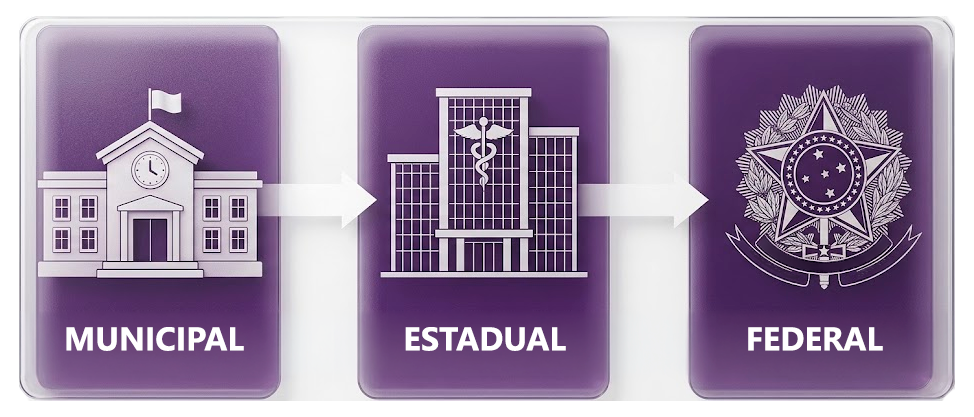
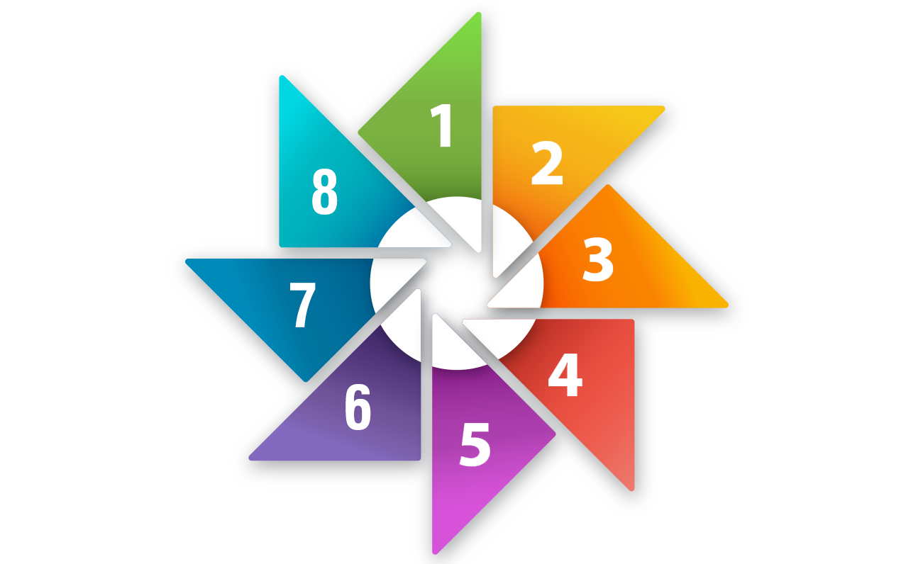

Neste módulo, você conhecerá as principais fontes de dados
utilizadas pela Vigilância em Saúde e compreenderá como essas informações são
produzidas, organizadas e integradas para subsidiar o planejamento, o monitoramento
e a tomada de decisão no Sistema Único de Saúde (SUS). Também serão discutidos os
desafios relacionados à qualidade da informação, à ética no uso dos dados e às
oportunidades proporcionadas pela transformação digital para fortalecer as ações de
vigilância e promover uma gestão baseada em evidências.
Objetivos do
módulo
Ao final deste módulo, esperamos que você seja capaz de:
Conhecer os Sistemas de Informação em Saúde.
Identificar as fontes de dados de interesse da Vigilância em Saúde.
Reconhecer a importância da Ética e Bioética para as ações em
Vigilância em Saúde no contexto da transformação digital.
Nesta aula, você irá percorrer o ecossistema de produção
e gestão de informações em saúde no Brasil, vamos detalhar as principais fontes,
seu fluxo de produção, seus desafios e seu potencial para a tomada de decisão
baseada em evidências.
Objetivos de aprendizagem
Ao final desta aula, esperamos que você seja capaz de:
Identificar e descrever as principais fontes de dados em
saúde pública no Brasil.
Compreender a estrutura hierárquica e descentralizada do
sistema de informação do SUS.
Analisar criticamente a qualidade dos dados, reconhecendo
limites como subnotificação e incompletude.
Aplicar os conhecimentos na localização, interpretação e uso de
bases de dados para pesquisa e gestão em saúde.
Introdução ao Sistema de Informação em
Saúde no Brasil
Os Sistemas de Informação em Saúde constituem a base
fundamental para a vigilância epidemiológica, o planejamento e a gestão do
Sistema Único de Saúde (SUS). Conhecer suas características, potencialidades e
limitações é essencial para todo profissional de saúde pública. A qualidade da
informação depende do comprometimento de todos os atores envolvidos, desde o
profissional que preenche o primeiro registro até os analistas que produzem
informação estratégica para a tomada de decisão. Em tempos de transformação
digital, o desafio é integrar novas tecnologias mantendo os princípios de
universalidade, equidade e participação social que orientam o SUS. A informação
em saúde é um bem público que deve estar a serviço da vida e da redução das
iniquidades.
A produção e gestão de informações em saúde no Brasil
constituem um ecossistema complexo e fundamental para o planejamento,
monitoramento e avaliação das políticas públicas de saúde. Este sistema é
estruturado de forma descentralizada e hierárquica, refletindo a própria
organização do Sistema Único de Saúde (SUS).
A espinha dorsal desse ecossistema é o Departamento de
Informática do SUS (DATASUS), órgão do Ministério da Saúde responsável pela
coordenação, consolidação e disseminação nacional dos dados. No entanto, o
panorama informacional é ampliado por contribuições essenciais de outras
instituições, como o Instituto Brasileiro de Geografia e Estatística (IBGE), a
Agência Nacional de Saúde Suplementar (ANS), a Agência Nacional de Vigilância
Sanitária (ANVISA) e a Fundação Oswaldo Cruz (Fiocruz).
O DATASUS e seus Principais Sistemas de
Informação
O DATASUS gerencia um conjunto de sistemas nacionais que
são a principal fonte de dados administrativos e epidemiológicos do país. Cada
sistema é dedicado a um tipo específico de evento ou atendimento, utilizando
fichas e variáveis padronizadas em todo o território nacional, o que garante a
comparabilidade dos dados.
Sistema de Informações sobre Mortalidade
O Sistema de Informações sobre Mortalidade (SIM) foi
criado em 1975 pelo Ministério da Saúde (MS), e representa um dos mais antigos e
consolidados sistemas de informação em saúde do Brasil. Seu objetivo principal é
captar dados sobre todos os óbitos ocorridos no território nacional e fornecer
informações sobre mortalidade para todas as esferas de gestão do SUS. O SIM,
unificou alguns modelos, e criou um documento base: a Declaração de Óbito (DO).
A DO é o documento padrão utilizado em todo o país, e é
emitida gratuitamente pelos estabelecimentos de saúde e secretarias municipais
de saúde. Trata-se de um formulário de três vias, numerado sequencialmente, que
deve ser preenchido por um médico ou, em algumas situações específicas, por
outros profissionais legalmente habilitados. Vamos ver mais algumas informações
sobre este documento?
A DO contém informações divididas em blocos:
Identificação da pessoa falecida: nome, data de nascimento, sexo, raça/cor, estado civil, escolaridade, ocupação habitual e endereço de residência.
Informações sobre o óbito: data, hora, local da ocorrência (hospital, domicílio, via pública etc.), tipo de óbito (fetal, não fetal).
Causas da morte: este é o campo mais crítico do sistema. Segue a metodologia da Classificação Internacional de Doenças (CID-10), onde são registradas as causas que levaram à morte, organizadas em uma cadeia causal. A causa básica (a doença ou condição que iniciou a cadeia de eventos que levou diretamente à morte) é fundamental para as estatísticas de mortalidade.
Informações complementares: sobre gestação (para mulheres em idade fértil), violência, acidente de trabalho.
Após o preenchimento pelo médico, a DO segue para o cartório de registro civil (para emissão da certidão de óbito) e para a Secretaria Municipal de Saúde (SMS). O município é responsável pela digitação no SIM e pelo envio dos dados à Secretaria Estadual de Saúde (SES), que consolida e encaminha ao DATASUS nacional.
Agora, vamos falar sobre aplicações e indicadores desse
ecossistema de informações. Você sabia que o SIM alimenta o cálculo de diversos
indicadores essenciais? Veja quais são:
Taxa de mortalidade geral e específica (por idade, sexo,
causa).
Taxa de mortalidade infantil (menores de 1 ano).
Taxa de mortalidade materna.
Anos Potenciais de Vida Perdidos (APVP).
Perfil de mortalidade por causas externas (acidentes,
homicídios, suicídios).
Esse ecossistema possui alguns desafios específicos: a principal limitação do SIM é a qualidade do preenchimento da causa básica. Em regiões com menor acesso a serviços de saúde, há maior proporção de causas mal definidas (códigos R do CID-10). Outro desafio é a subnotificação em áreas remotas, onde óbitos podem não ser registrados adequadamente.
Sistema de Informações sobre Nascidos
Vivos (SINASC)
Implantado oficialmente em 1990, o SINASC revolucionou a obtenção de dados sobre nascimentos no Brasil, substituindo informações indiretas provenientes de censos demográficos e proporcionando dados em tempo quase real.
Fonte: Magnific.com
Atualmente, o documento base para obter essas informações é a Declaração de Nascido Vivo (DNV), um formulário pré-numerado, distribuído gratuitamente pelo MS. O DNV é o documento oficial, padronizado nacionalmente, que deve ser preenchido para todo nascimento ocorrido no território brasileiro, seja em estabelecimento de saúde ou em domicílio. Vamos ver mais algumas informações sobre este documento?
A DNV contém um conjunto rico de informações organizadas em blocos:
Dados do recém-nascido: data e hora do nascimento, sexo, peso ao nascer, estatura, perímetro cefálico, Apgar no 1º e 5º minuto, presença de anomalias congênitas, tipo de parto (vaginal ou cesáreo).
Dados da mãe: nome, idade, escolaridade, raça/cor, estado civil, ocupação, número de filhos vivos e mortos, endereço de residência.
Dados da gestação e parto: duração da gestação (em semanas), número de consultas pré-natal, local do parto, tipo de gravidez (única, dupla etc.).
Dados do estabelecimento e profissional: onde ocorreu o parto, nome do responsável pelo parto.
Em geral, o hospital ou maternidade preenche a DNV. Uma via fica com a família para registro em cartório (obtenção da certidão de nascimento), e outra via é encaminhada à SMS para digitação no sistema. Os dados seguem o seguinte fluxo:

Agora, vamos falar sobre aplicações e indicadores? O
SINASC é fonte primária para:
Taxa de natalidade.
Proporção de nascidos vivos de baixo peso ao nascer (<
2.500g).
Proporção de nascidos vivos prematuros.
Cobertura de consultas pré-natal.
Taxa de cesárea.
Perfil demográfico das mães (idade, escolaridade).
Identificação de áreas de risco para saúde materno-infantil.
A qualidade dos dados do SINASC vem melhorando consistentemente, mas ainda existem desafios. Campos como raça/cor e escolaridade da mãe podem apresentar incompletude. A subnotificação é menor do que no SIM, mas ainda ocorre em partos domiciliares em áreas rurais remotas.
Sistema de Informação de Agravos de
Notificação
O Sistema de Informação de Agravos de Notificação (SINAN)
é o principal instrumento de coleta e processamento dos dados sobre doenças e
agravos de notificação compulsória no Brasil. Foi desenvolvido no início dos
anos 1990 e tem papel central na vigilância epidemiológica. Veja a seguir mais
algumas informações importantes sobre esse sistema.
A notificação compulsória é uma obrigação legal estabelecida pela Portaria de Consolidação nº 4/2017 do MS e legislações complementares. Todo profissional de saúde e estabelecimentos de saúde (públicos e privados) são obrigados a notificar os casos suspeitos ou confirmados das doenças listadas.
O SINAN monitora mais de 50 doenças e agravos, incluindo:
Doenças imunopreveníveis: varicela em surtos, rubéola, tétano.
Agravos relacionados ao trabalho: acidentes de trabalho graves e com material biológico, intoxicações exógenas.
Violências e acidentes: violência doméstica/sexual, tentativa de suicídio, acidentes por animais peçonhentos.
Outros agravos: câncer relacionado ao trabalho, febre maculosa, botulismo.
O SINAN trabalha com dois tipos de formulários:
Ficha de Notificação Individual (FNI): preenchida quando há suspeita da doença. Contém dados básicos do paciente, sinais e sintomas, dados laboratoriais iniciais.
Ficha de Investigação: específica para cada doença/agravo. É preenchida após investigação epidemiológica mais detalhada. Contém informações sobre histórico de exposição, evolução clínica, resultados laboratoriais conclusivos, condições ambientais, medidas de controle adotadas.
A notificação se inicia no serviço de saúde que identificou o caso (hospital, UBS, laboratório). A ficha é enviada à vigilância epidemiológica municipal, que tem até 24 horas para notificar doenças de notificação imediata (como febre amarela, sarampo, meningite meningocócica). Para outras doenças, o prazo é semanal. A vigilância municipal investiga o caso, preenche a ficha de investigação e alimenta o sistema. Os dados seguem para o nível estadual e federal.
Agora, vamos falar sobre aplicações e indicadores? O
SINAN permite:
Monitoramento em tempo real de surtos e epidemias.
Cálculo de taxas de incidência e prevalência de doenças.
Identificação de áreas de risco e grupos vulneráveis.
Avaliação da efetividade de medidas de controle e programas de
saúde.
Orientação da investigação epidemiológica de campo.
Suporte à decisão para alocação de recursos.
A subnotificação é um problema significativo no SINAN, especialmente para doenças menos graves ou em locais com difícil acesso aos serviços. A qualidade do preenchimento é variável, com campos importantes frequentemente incompletos. A duplicidade de registros pode ocorrer quando o mesmo caso é notificado por diferentes serviços.
Sistema de Informações Hospitalares do
SUS
Criado em 1991, o Sistema de Informações Hospitalares do
SUS (SIH/SUS) registra todas as internações hospitalares financiadas pelo SUS em
estabelecimentos públicos e privados conveniados. Embora tenha origem
administrativa (para pagamento de procedimentos), tornou-se uma importante fonte
de dados epidemiológicos.
O documento base do SIH/SUS é a Autorização de Internação
Hospitalar (AIH), este é o documento que autoriza a internação e o pagamento ao
hospital. Cada AIH corresponde a uma internação e contém um conjunto padronizado
de informações. Vamos ver mais algumas informações sobre este documento?
A AIH registra:
Dados do paciente: nome, data de nascimento, sexo, município de residência, raça/cor.
Dados da internação: data de entrada e saída, dias de permanência, motivo da saída (alta, transferência, óbito), caráter da internação (eletiva, urgência/emergência).
Dados clínicos: diagnóstico principal (codificado pela CID-10), diagnóstico secundário, procedimentos realizados (codificados pela Tabela de Procedimentos do SUS).
Dados do estabelecimento: CNES do hospital, município de localização.
Dados financeiros: valor total da internação, valor de serviços profissionais, diárias, exames.
O hospital preenche a AIH no momento da internação e envia mensalmente um arquivo eletrônico com todas as internações para a SES. O estado processa, critica e encaminha os dados ao DATASUS, que efetua o pagamento e disponibiliza os dados para consulta.
Agora, vamos falar sobre aplicações e indicadores? O
SIH/SUS permite calcular:
Taxa de internação hospitalar.
Tempo médio de permanência.
Taxa de mortalidade hospitalar.
Perfil de morbidade hospitalar (principais causas de
internação).
Custos com internações.
Identificação de procedimentos de alto custo.
Distribuição geográfica da oferta de leitos.
O SIH/SUS não cobre internações pagas por planos de saúde privados, convênios empresariais ou particulares. Portanto, os dados são representativos apenas da população usuária do SUS. Além disso, há incentivo econômico para codificação de procedimentos mais complexos (upcoding), o que pode distorcer o perfil de morbidade.
Sistema de Informações Ambulatoriais do
SUS
O Sistema de Informações Ambulatoriais do SUS (SIA/SUS)
foi implantado em 1994. Ele registra todos os atendimentos ambulatoriais
realizados no SUS, desde consultas básicas em Unidades de Saúde da Família até
procedimentos de alta complexidade.
O documento base do SIA/SUS é o Boletim de Produção
Ambulatorial (BPA), o principal instrumento de registro desse sistema. Cada
procedimento realizado é codificado de acordo com a Tabela de Procedimentos do
SUS e registrado no BPA do estabelecimento.
Agora, vamos ver mais algumas informações sobre o SIA?
O SIA registra:
Quantidade de procedimentos realizados por tipo.
Município e estabelecimento de saúde onde foram realizados.
Os estabelecimentos de saúde consolidam mensalmente seus BPA e enviam à SMS. O município valida, envia ao estado, que processa e envia ao DATASUS para pagamento e disponibilização.
Agora, vamos falar sobre aplicações e indicadores? O
SIA/SUS permite:
Monitorar a produção ambulatorial do SUS.
Calcular a cobertura de ações programáticas (pré-natal,
hipertensão, diabetes).
Avaliar a capacidade instalada de serviços especializados.
Identificar vazios assistenciais.
Estimar custos com atenção ambulatorial.
Avaliar a oferta de procedimentos diagnósticos.
O SIA tem alguns desafios específicos, como por exemplo:
Trabalhar com dados agregados, sem identificação individual do paciente na maioria dos procedimentos. Isso limita análises mais detalhadas.
Sub-registro de alguns procedimentos.
Complexidade da Tabela de Procedimentos (com milhares de códigos) dificulta a codificação correta.
Sistema de Vigilância Alimentar e
Nutricional
O Sistema de Vigilância Alimentar e Nutricional (SISVAN)
foi criado em 1990, com o objetivo de realizar o diagnóstico descritivo e
analítico da situação alimentar e nutricional da população brasileira. É uma
ferramenta essencial para identificar grupos em risco nutricional. Vamos ver
mais algumas informações sobre o SISVAN?
O SISVAN Web (versão online desde 2008) coleta:
Dados antropométricos: peso, altura/comprimento, perímetro cefálico (para crianças menores de 2 anos), circunferência da cintura.
Marcadores de consumo alimentar: questionário qualitativo sobre consumo de alimentos saudáveis (frutas, verduras, feijão) e não saudáveis (bebidas açucaradas, alimentos ultraprocessados, embutidos).
Dados do cidadão: idade, sexo, fase da vida (criança, adolescente, adulto, idoso, gestante).
O sistema calcula automaticamente índices antropométricos e classifica o estado nutricional de acordo com as curvas de referência da OMS. As classificações incluem categorias como magreza, eutrofia, sobrepeso, obesidade. Veja os índices calculados por público-alvo:
Público-alvo
Índices antropométricos
Crianças (< 10 anos)
Peso/idade, estatura/idade, peso/estatura, Índice de Massa Corporal (IMC)/idade.
Adolescentes
IMC/idade.
Adultos
IMC.
Pessoas idosas
IMC específico para faixa etária.
Gestantes
IMC por semana gestacional.
Embora o sistema seja aberto a toda a população, há foco em grupos vulneráveis atendidos em programas governamentais:
Crianças beneficiárias do Programa Bolsa Família.
Gestantes em acompanhamento pré-natal.
Crianças em creches públicas.
Pessoas idosas.
Indivíduos atendidos na Atenção Primária.
As informações são coletadas e os dados são inseridos diretamente no sistema online. A coleta é realizada principalmente nas Unidades Básicas de Saúde (UBS), durante as consultas de rotina (puericultura, pré-natal, acompanhamento de hipertensão/diabetes). Além disso, os Agentes Comunitários de Saúde (ACSs) também podem realizar medições domiciliares.
Agora, vamos falar sobre aplicações e indicadores? O
SISVAN permite:
Monitorar tendências temporais de obesidade e desnutrição.
Identificar territórios com alta prevalência de problemas
nutricionais.
Orientar políticas de segurança alimentar e nutricional.
Avaliar programas de combate à fome e promoção da alimentação
saudável.
Condicionalidades do Programa Bolsa Família (acompanhamento
nutricional).
O SISVAN tem alguns desafios específicos, como por exemplo:
Cobertura baixa em relação ao total da população.
Concentração de registros em grupos específicos (beneficiários de programas sociais).
A qualidade das medidas antropométricas depende de equipamentos calibrados e técnica adequada dos profissionais.
Cadastro Nacional de Estabelecimentos de
Saúde
O Cadastro Nacional de Estabelecimentos de Saúde (CNES),
implantado em 2000, é o cadastro oficial de todos os estabelecimentos de saúde
do país, sejam públicos, privados ou filantrópicos. É um sistema cadastral
fundamental para o conhecimento da capacidade instalada da rede de saúde. Vamos
conhecer melhor o CNES?
Todos os estabelecimentos que realizam ações e serviços de saúde devem estar cadastrados no CNES:
Hospitais gerais e especializados.
UBSs.
Unidades de Pronto Atendimento (UPA).
Policlínicas.
Laboratórios de análises clínicas.
Serviços de diagnóstico por imagem.
Consultórios isolados.
Clínicas especializadas.
Unidades de apoio (centrais de ambulâncias, bancos de sangue).
Estabelecimentos de ensino e pesquisa em saúde.
O CNES contém dados extremamente detalhados:
Identificação: nome fantasia, razão social, CNPJ, endereço completo, telefone.
Tipo e natureza jurídica: se é público (federal, estadual, municipal), privado com fins lucrativos, privado sem fins lucrativos (filantrópico).
Vínculo com o SUS: se atende exclusivamente SUS, parcialmente, ou não atende SUS.
Estrutura física: número total de leitos (gerais, especializados, UTI, pediátricos, obstétricos, psiquiátricos), número de consultórios, salas de cirurgia, leitos de observação.
Equipamentos: lista detalhada de equipamentos disponíveis (aparelhos de raio-X, tomógrafos, ressonância magnética, mamógrafos, eletrocardiógrafos, ventiladores pulmonares etc.), com informação sobre se estão em uso ou não.
Recursos humanos: profissionais vinculados ao estabelecimento (médicos por especialidade, enfermeiros, técnicos, fisioterapeutas, nutricionistas, etc.), com carga horária e tipo de vínculo (estatutário, CLT, autônomo).
Serviços disponibilizados: lista completa dos serviços oferecidos (classificação de especialidades, procedimentos diagnósticos e terapêuticos).
O CNES deve estar permanentemente atualizado, pois é
utilizado para habilitações de serviços e repasse de recursos federais, e essa
atualização é de responsabilidade das SMSs. Por isso, estabelecimentos que
sofrem alterações (mudança de endereço, aquisição de equipamentos, alteração de
profissionais) devem comunicar a SMS para atualização cadastral.
O CNES é essencial para:
Planejamento da rede de atenção à saúde.
Identificação de vazios assistenciais (regiões sem determinados
serviços).
Regulação do acesso (centrais de regulação utilizam o CNES).
Pesquisas sobre capacidade instalada.
Georreferenciamento de serviços de saúde.
Dimensionamento de recursos humanos.
Cálculo de indicadores de oferta de serviços (leitos por 1.000
habitantes, médicos por habitante).
A principal limitação do CNES é a desatualização: estabelecimentos fecham, mudam de endereço, adquirem ou desativam equipamentos, e essas mudanças nem sempre são prontamente registradas. Além disso, as informações sobre recursos humanos podem ser defasadas.
Sistema de Informação do Programa
Nacional de Imunizações
O Programa Nacional de Imunizações (PNI) é reconhecido
internacionalmente como um dos mais bem-sucedidos programas de vacinação em
massa do mundo. Criado em 1973, o Sistema de Informação do Programa Nacional de
Imunizações (SI-PNI) é o sistema que registra as doses aplicadas. Vamos conhecer
melhor esse sistema?
Toda vacina aplicada na rede pública (e, mais recentemente, também na rede privada através de integração) deve ser registrada no sistema:
Tipo de vacina aplicada (BCG, hepatite B, tríplice viral etc.).
Dose aplicada (1ª dose, 2ª dose, reforço, dose única).
Data da aplicação.
Idade do vacinado.
Município de residência.
Estabelecimento de saúde que aplicou.
Lote e fabricante da vacina (para rastreabilidade).
O SI-PNI acompanha o cumprimento do calendário oficial, que define quais vacinas devem ser aplicadas em cada faixa etária:
Campanhas de seguimento contra sarampo e poliomielite.
Vacinação de bloqueio em casos de surtos.
Campanhas de atualização da caderneta vacinal.
Tradicionalmente, as salas de vacinação preenchiam boletins manuais que eram posteriormente digitados. Com a transformação digital, muitos municípios já possuem sistemas informatizados nas próprias salas de vacinação (uso de tablets ou computadores), permitindo registro em tempo real.
Agora, vamos falar sobre aplicações e indicadores? O
SI-PNI permite:
Calcular cobertura vacinal (percentual da população-alvo
vacinada).
Monitorar homogeneidade da cobertura (identificar bolsões de
não vacinados).
Identificar municípios com baixa cobertura para ações de
intensificação.
Avaliar risco de reintrodução de doenças erradicadas.
Planejar aquisição e distribuição de vacinas.
Monitorar eventos adversos pós-vacinação.
A meta de cobertura vacinal preconizada pela OMS é de 95% para a maioria das vacinas. Nos últimos anos, o Brasil tem enfrentado queda nas coberturas, o que aumenta o risco de surtos de doenças imunopreveníveis. O sub-registro, especialmente em áreas rurais, e a hesitação vacinal são desafios importantes.
Sistema de Informação em Saúde para a
Atenção Básica
O Sistema de Informação em Saúde para a Atenção Básica
(SISAB) foi desenvolvido pelo DATASUS para coletar e organizar os dados das
equipes de Saúde da Família e ACSs em todo o Brasil. Implantado nacionalmente a
partir de 2013, substituiu gradualmente o antigo Sistema de Informação da
Atenção Básica (SIAB). Vamos conhecer melhor o SISAB?
O SISAB faz parte da estratégia e-SUS AB, que visa informatizar e qualificar a informação na Atenção Primária. A estratégia possui dois sistemas de software:
Sistema com Coleta de Dados Simplificada (CDS): para municípios sem informatização, com digitação posterior das fichas.
Sistema com Prontuário Eletrônico do Cidadão (PEC): para municípios informatizados, com registro direto no prontuário eletrônico.
O SISAB coleta dados sobre:
Cadastro individual e domiciliar: informações socioeconômicas das famílias acompanhadas (composição familiar, renda, condições de moradia, saneamento).
Atendimentos: consultas médicas e de enfermagem, procedimentos, encaminhamentos.
Visitas domiciliares: realizadas por ACSs, com motivo e desfecho da visita.
Atividades coletivas: grupos educativos, reuniões de equipe, ações de promoção da saúde.
Marcadores para Atenção Domiciliar: identificação de pessoas acamadas, com deficiência, em uso de sonda ou ostomia.
Condições de saúde: problemas e condições avaliadas (hipertensão, diabetes, gestação, aleitamento materno).
O SISAB alimenta o Previne Brasil, novo modelo de financiamento federal da Atenção Primária. São calculados indicadores de desempenho que determinam parte do repasse financeiro, são eles:
Proporção de gestantes com pelo menos 6 consultas pré-natal.
Proporção de gestantes com exames de sífilis e HIV.
Cobertura de exame citopatológico (preventivo de câncer de colo de útero).
Cobertura vacinal de poliomielite e pentavalente.
Percentual de pessoas hipertensas com pressão arterial aferida.
Percentual de diabéticos com solicitação de hemoglobina glicada.
O SISAB é fundamental para:
Monitoramento da cobertura populacional das equipes de
Saúde da Família.
Planejamento e organização dos serviços da Atenção Primária.
Avaliação do desempenho das equipes.
Identificação de populações vulneráveis.
Cálculo do financiamento federal (Previne Brasil).
Gestão do cuidado individual e coletivo.
A transição do SIAB para o SISAB trouxe dificuldades operacionais em alguns municípios, e a qualidade do registro também é um grande desafio, pois depende da adesão dos profissionais e da disponibilidade de infraestrutura tecnológica (computadores, internet) nas unidades de saúde.
A Contribuição Fundamental do IBGE: Dados
Demográficos e Determinantes Sociais da Saúde
Enquanto o DATASUS foca em eventos e atendimentos em
saúde, o IBGE fornece o pano de fundo populacional e social necessário para
contextualizar e analisar esses dados. Sem informações precisas sobre a
população, não é possível calcular taxas e indicadores válidos.
Censo Demográfico
Realizado a cada dez anos (anos terminados em 0), o Censo
é a pesquisa mais completa sobre a população brasileira. Trata-se de uma
investigação domiciliar que visa visitar todos os domicílios do país.
Informações Coletadas
O Censo coleta dados sobre:
Demografia básica: número de moradores, idade, sexo, cor/raça, relação de parentesco.
Condições de moradia: tipo de domicílio, material de construção, número de cômodos, abastecimento de água, esgotamento sanitário, destino do lixo, energia elétrica.
Educação: alfabetização, anos de estudo, frequência escolar.
Trabalho e renda: ocupação, rendimentos, atividade econômica.
Migração: local de nascimento, tempo de residência no município.
Fecundidade: número de filhos nascidos vivos.
Pessoas com deficiência: tipos de deficiência, grau de dificuldade.
Características étnicas e culturais: povos indígenas, quilombolas.
Importância para a Saúde
O Censo fornece o denominador populacional para o cálculo de todas as taxas epidemiológicas. Além disso, as informações sobre Determinantes Sociais da Saúde (DSS) permitem:
Análise de iniquidades em saúde por raça/cor, renda, escolaridade.
Identificação de áreas com piores condições de saneamento (fator de risco para doenças infecciosas).
Planejamento de ações intersetoriais (saúde, educação, habitação).
Delimitação de territórios de atuação das equipes de saúde.
Pesquisa Nacional por Amostra de
Domicílios Contínua
Iniciada em 2012, a Pesquisa Nacional por Amostra de
Domicílios Contínua (PNAD Contínua) substitui as antigas pesquisas anuais do
IBGE. É uma pesquisa amostral que investiga continuamente características
socioeconômicas da população.
Na PNAD Contínua, alguns temas são permanentes, por
exemplo, trabalho, rendimento, habitação, educação. Mas, também há módulos
especiais relacionados à saúde, são eles:
Módulo de Acesso a Serviços de Saúde: investiga cobertura
de plano de saúde, procura por atendimento, tipo de serviço utilizado (SUS
ou privado), barreiras de acesso (falta de vagas, distância, custo).
Outros módulos: segurança alimentar, cuidados de pessoas
(idosos, crianças), tecnologia da informação.
A PNAD Contínua fornece dados atualizados anualmente
sobre acesso aos serviços de saúde, complementando informações do DATASUS.
Pesquisa Nacional de Saúde
Realizada em parceria entre IBGE e MS, a Pesquisa
Nacional de Saúde (PNS) é a pesquisa mais abrangente sobre as condições de saúde
da população brasileira. Foi realizada em 2013 e 2019, com nova edição prevista
periodicamente. A PNS investiga:
Recurso Interativo

Ações estratégicas
A PNS capta informações sobre morbidade que muitas vezes não chegam aos sistemas de notificação ou atendimento. É essencial para conhecer o "iceberg" da doença (casos não diagnosticados ou não tratados no sistema de saúde).
Outras Fontes Especializadas no
Ecossistema de Dados
Existem outras fontes especializadas em ecossistemas de
dados relacionados à saúde. Vamos conhecê-las?
Agência Nacional de Saúde Suplementar
A Agência Nacional de Saúde Suplementar (ANS) regula o
setor de planos privados de assistência à saúde no Brasil. Suas bases de dados
são públicas e complementam os dados do SUS, permitindo análises comparativas
entre SUS e saúde suplementar, identificação da cobertura duplicada e estudos
sobre iniquidades no acesso.
A ANS disponibiliza as seguintes informações:
Número de beneficiários de planos de saúde (por município,
faixa etária, tipo de contratação).
Operadoras ativas no mercado.
Índice de Desempenho da Saúde Suplementar (IDSS).
Taxa de cobertura de planos de saúde por município.
Reclamações registradas contra operadoras.
Indicadores de qualidade assistencial (taxa de cesárea,
internações por condições sensíveis à atenção primária).
Agência Nacional de Vigilância Sanitária
A Agência Nacional de Vigilância Sanitária (ANVISA) é
responsável pela regulação e fiscalização de produtos e serviços que envolvem
risco sanitário. Por isso, ela é essencial para a segurança do paciente,
vigilância pós-comercialização, investigações de surtos. Sua base de dados é
composta por:
Registro de medicamentos: lista de medicamentos aprovados,
composição, indicações.
Farmacovigilância: notificações de eventos adversos a
medicamentos e vacinas.
Tecnovigilância: eventos adversos relacionados a produtos para
saúde (equipamentos, materiais).
Hemovigilância: eventos adversos relacionados à transfusão de
sangue.
Vigilância de alimentos: surtos de doenças transmitidas por
alimentos, monitoramento de contaminantes.
Inspeções sanitárias: relatórios de inspeção em
estabelecimentos de saúde, indústrias farmacêuticas, portos e aeroportos.
Fundação Oswaldo Cruz
A Fundação Oswaldo Cruz (Fiocruz) é a principal
instituição de pesquisa em saúde pública do Brasil. Além de pesquisa, desenvolve
sistemas de monitoramento. Veja a seguir exemplos de alguns desses sistemas:
InfoGripe
Monitora casos de Síndrome Respiratória Aguda Grave (SRAG), integrando dados do SINAN e SIVEP-Gripe. Este sistema foi fundamental durante a pandemia de COVID-19.
Observatórios
Observatório de Clima e Saúde (correlação entre eventos climáticos e doenças) e Observatório da Criminalidade e Violência.
Plataformas de vigilância genômica
Sequenciamento de patógenos (vírus, bactérias) para identificação de variantes e surtos.
O Fluxo Descentralizado: da Unidade de
Saúde ao DATASUS Nacional
A coleta de dados no SUS percorre uma cadeia
descentralizada de consolidação e validação, na qual cada esfera de governo
tem responsabilidades específicas até chegar ao DATASUS. Vamos entender
melhor como isso funciona?
Recurso Interativo
Desafios Críticos: Subnotificação e
Qualidade dos Dados
Um usuário crítico dos dados em saúde deve sempre
questionar sua qualidade. Dois problemas principais introduzem viés nas
análises:
Definição:
Ocorre quando o evento de saúde simplesmente não é registrado no sistema.
Causas:
Óbitos em áreas remotas ou domiciliares sem assistência médica.
Falhas na articulação entre serviços (caso atendido não é notificado).
Doenças estigmatizadas (relutância em registrar HIV, suicídio).
Falta de conhecimento sobre a obrigatoriedade de notificação.
Sobrecarga de trabalho dos profissionais.
Consequências:
Subestimação das taxas de mortalidade ou incidência.
Distorção do perfil epidemiológico.
Prejuízo ao planejamento e alocação de recursos.
Falha na detecção precoce de surtos.
Exemplo:
A subnotificação de dengue pode chegar a 80% em algumas localidades, pois muitos casos leves não procuram atendimento ou não são notificados.
Definição:
O evento é registrado, mas informações importantes estão faltando ou incorretas.
Campos comumente afetados:
Raça/cor.
Escolaridade.
Ocupação.
Causa básica da morte (causas mal definidas).
Idade (em populações sem documentação).
Consequências:
Viés nas análises sobre iniquidades em saúde.
Impossibilidade de calcular indicadores específicos.
Comprometimento da vigilância epidemiológica.
Dificuldade de identificar grupos de risco.
Estratégias do SUS para Melhorar a
Qualidade da Informação
O SUS possui algumas estratégias para melhorar a
qualidade das informações de saúde. Vamos conhecê-las?
Vigilância epidemiológica procura ativamente por eventos não registrados, cruzando dados de cemitérios, cartórios e serviços de saúde.
Investigação de óbitos infantis e maternos: todos os óbitos de menores de 1 ano e de mulheres em idade fértil devem ser investigados.
Investigação de óbitos por causas mal definidas: para esclarecer a causa real.
Investigação de casos graves: aprofundamento da investigação de casos suspeitos ou confirmados de doenças prioritárias.
Treinamentos constantes para profissionais sobre:
Correta declaração de causa da morte.
Preenchimento de fichas de notificação.
Importância epidemiológica dos dados.
Uso ético da informação.
Sistemas automatizados emitem alertas para:
Inconsistências (idade incompatível com causa, sexo incompatível com diagnóstico).
Campos obrigatórios não preenchidos.
Duplicidades.
Técnica de relacionamento probabilístico entre diferentes bases:
Cruzar SIM com SINAN (verificar se óbito tem notificação)
Cruzar SINASC com SIM infantil (verificar completude)
Cruzar SIH com SIM (investigar óbitos hospitalares)
Pesquisadores utilizam métodos para estimar e corrigir subnotificação:
Técnicas de captura-recaptura.
Modelagem estatística.
Redistribuição de causas mal definidas.
Acesso e Uso dos Dados: Transparência e
Democracia Sanitária
O DATASUS disponibiliza os dados por diversos meios de
acesso público, vamos conhecê-los?
Recurso Interativo
DATASUS — tabnet.datasus.gov.br
A disponibilização dos dados segue os seguintes
princípios:
Acesso universal: qualquer cidadão pode acessar.
Gratuidade: não há cobrança.
Formato aberto: dados em formatos que podem ser processados por
diferentes softwares.
Atualização regular: bases são atualizadas periodicamente.
Vale lembrar que embora os dados sejam públicos, há
proteção da privacidade, veja:
Dados individualizados são anonimizados.
Não há divulgação de nomes ou documentos.
Municípios pequenos podem ter dados agregados para evitar
identificação.
Perspectivas Futuras: Transformação
Digital e Big Data em Saúde
Agora, vamos ver o que a transformação digital e Big Data
podem trazer de benefícios na área da Saúde:
A implementação de prontuários eletrônicos padronizados e interoperáveis permitirá:
Registro mais preciso e completo.
Integração automática entre sistemas.
Acompanhamento longitudinal do cidadão.
Redução de duplicidades.
O uso de IA permite:
Predição de surtos e epidemias.
Identificação de padrões ocultos nos dados.
Otimização da alocação de recursos.
Apoio à decisão clínica.
Sistemas móveis e conectividade permitem:
Notificação imediata de eventos.
Monitoramento em tempo real.
Resposta mais rápida a emergências.
Atividade
Questão 01 de 01
Acertos: 0
Selecione uma opção para confirmar
sua
resposta.
Resumo da aula
Nesta aula, você conheceu os principais Sistemas de
Informação em Saúde utilizados no SUS e compreendeu como eles contribuem para a
vigilância, o planejamento, a gestão e a avaliação das políticas públicas.
Também identificou as principais fontes de dados produzidas por instituições
como DATASUS, IBGE, ANS, ANVISA e Fiocruz, além de entender o fluxo de produção
das informações, desde os serviços de saúde até a consolidação nacional. Por
fim, refletiu sobre os desafios relacionados à qualidade dos dados, à
subnotificação, à transparência e às perspectivas da transformação digital para
o fortalecimento da Vigilância em Saúde.
Você concluiu esta aula, continue se empenhando
nos seus estudos. Siga para a próxima aula!